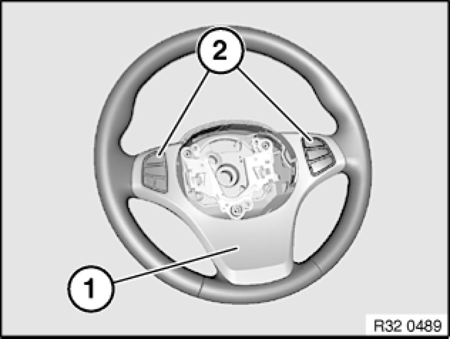

Replacing Sports Steering Wheel
32 33 015 - Replacing sports steering wheel

Note:
Chassis/wheel alignment is not required after the steering wheel has been replaced.

Necessary preliminary tasks:
- Remove sport steering wheel Removing and Installing Sports Steering Wheel

Remove cover Replacing Left or Right Cover for Steering Wheel (From 09/06) (1).
If necessary, remove switch Service and Repair(2) for multifunction unit.